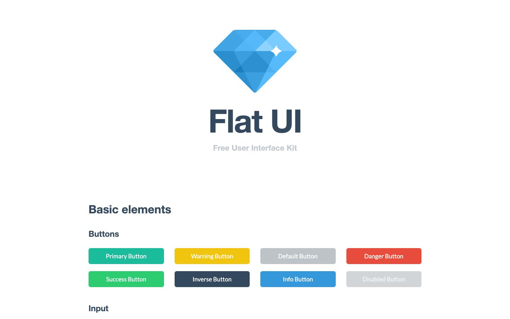

References / Software / 182
Flat UI Free kit
Designmodo’s free Bootstrap theme of 2013, which gave the flat web its best-known palette.
- Source
- designmodo/Flat-UI on GitHub (archived copy)
- Creator
- Designmodo
- Made
- 2013–2018
- Style
- Flat design (agent-proposed, not yet reviewed by a person)
- Moods
- Bright, clean, friendly
- Evidence
- Captured the live demo page designmodo.github.io/Flat-UI with
tools/capture.mjs(headless Chrome, 1440 × 900) on 2026-09-28 and inspected it. The demo is the current release (2.3), not the first 2013 version; Wayback copies of the 2013 demo lost their CSS. License and palette read from the repository on 2026-09-28. - Reviewed
- Rights
- Open license, stored. License: MIT. Rights policy
Context
The README calls Flat UI “a beautiful theme for Bootstrap. We have redesigned many of its components to look flat in every pixel.” The repository was created on 3 March 2013 and had about 15,000 stars on 2026-09-28.
Released under the MIT License, © 2013–2018 Designmodo (LICENSE).
The color variables name twenty swatches in pairs, for example $turquoise: #1abc9c and $green-sea: #16a085, $peter-river: #3498db and $belize-hole: #2980b9, $wet-asphalt: #34495e and $midnight-blue: #2c3e50 (_variables.scss).
The kit sets its base text in Lato ($font-family-base) and its demo titles in Helvetica Neue ($font-family-demo).
Observed
- A diamond logo made of flat blue and cyan facets with a white sparkle sits above the title “Flat UI” in heavy dark blue-gray type and a pale gray subtitle.
- Section headings “Basic elements” and “Buttons” are bold dark blue-gray.
- Eight buttons in two rows are solid fills: turquoise, yellow, silver gray, red, green, dark navy, blue, and a pale disabled gray. Each has white text and slightly rounded corners, with no border, gradient, or shadow.
- The page ground is plain white.
Why it belongs
Measured: Lato sets 93% of the text; large headings weigh 700; 24% of boxes have a 2 px border, from outlined input fields further down; 5% of boxes have a shadow. Only 6% of screenshot pixels are saturated because the demo is mostly white, so the capture fails the color range as well as the heading-weight range.
The kit is the reference point for the web branch of flat design: the same palette names reappear on Flat UI Colors and in this catalogue’s specimen colors.
Borrow
Give each semantic role (primary, success, warning, danger, info) one saturated hue, and pair it with a darker partner of the same hue for the pressed state.
Use a dark blue-gray such as #2c3e50 for text and dark buttons instead of black.
Measured
Machine-extracted by tools/extract-traits.js on . Full measurement.
- Type families
- Lato (93%), Helvetica Neue (7%)
- Type scale ratio
- 1.11
- Median radius
- 0 px
- Mean chroma
- 0.03
- Palette
- #ffffff 83%
- #34495e 10%
- #bdc3c7 2%
- #7f8c9a 2%
- #1abc9c 1%
- #d1f2eb 1%
- #eff0f2 1%
- #d6dbdf 0%

